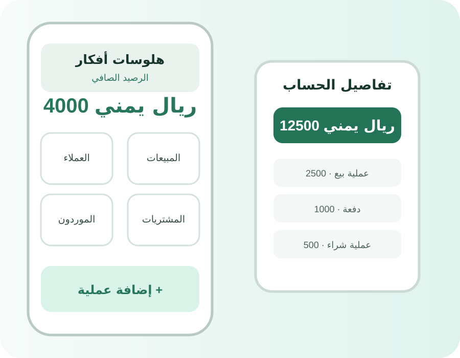

DftarPro — دفتر الحسابات
تطبيق محاسبي وإدارة أعمال يستهدف تنظيم العمليات اليومية للمتاجر والأعمال الصغيرة، مع واجهات عربية وبيانات محلية.
نظام محاسبي وإدارة أعمال صُمم ليجعل العمليات اليومية أوضح وأسهل.
تطبيق محاسبي وإدارة أعمال يستهدف تنظيم العمليات اليومية للمتاجر والأعمال الصغيرة، مع واجهات عربية وبيانات محلية.
تجميع العملاء والموردين والمبيعات والمشتريات والديون والمدفوعات والمصروفات والكشوفات في تجربة واحدة يساعد على تقليل تشتت البيانات أثناء العمل اليومي.
تم بناء المشروع كمنظومة تطبيقية تجمع الوظائف المحاسبية والإدارية الأساسية في واجهات موجهة للاستخدام اليومي، مع تخزين محلي للبيانات.

المعاينة المتاحة في موقع العلامة هي صورة تصميمية للمشروع وليست لقطة شاشة حقيقية من نسخة منشورة.
يوفر المشروع أساسًا موحدًا لإدارة العمليات المحاسبية اليومية، مع إمكانية تطويره وإضافة وظائف أخرى حسب احتياج العمل.
العملاء والموردون، المبيعات والمشتريات، الديون والمدفوعات، والكشوفات والتقارير في منظومة واحدة.